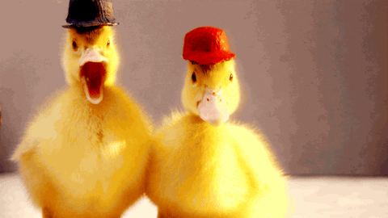

<!DOCTYPE html>
<html lang="es"></html>
<head>
    <meta charset="UTF-8">
    <title>Pato con sombrero</title>
</head>
<body>
    <h1>PATOS CON SOMBRERO</h1>
    
    <p>
        Existen patos que pueden usar sombrero
    </p>
    <a href="https://es.wikipedia.org/wiki/Pato"> Clik para Cuack </a>
    <ul>
        <li>Video</li>
    </ul>
    <video src="video/videoplayback.mp4" controls muted autoplay></video>
    <audio src="audio/FutureIslandsADreamOfYouAndMe.mp3" controls muted></audio>
    <ul>
        <li>Primeros patos</li>
    </ul>
    
    <p>
       A veces usan flores como sombrero
    </p>
    <ul>
        <li>Segundo pato</li>
    </ul>
    
    <p>
       Otras veces usan sombreros panameños
    </p>
    <a href="https://www.youtube.com/watch?v=tTyiL0aHqqY"> Información Importante </a>
</body>
</html>